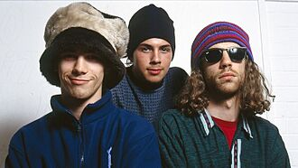
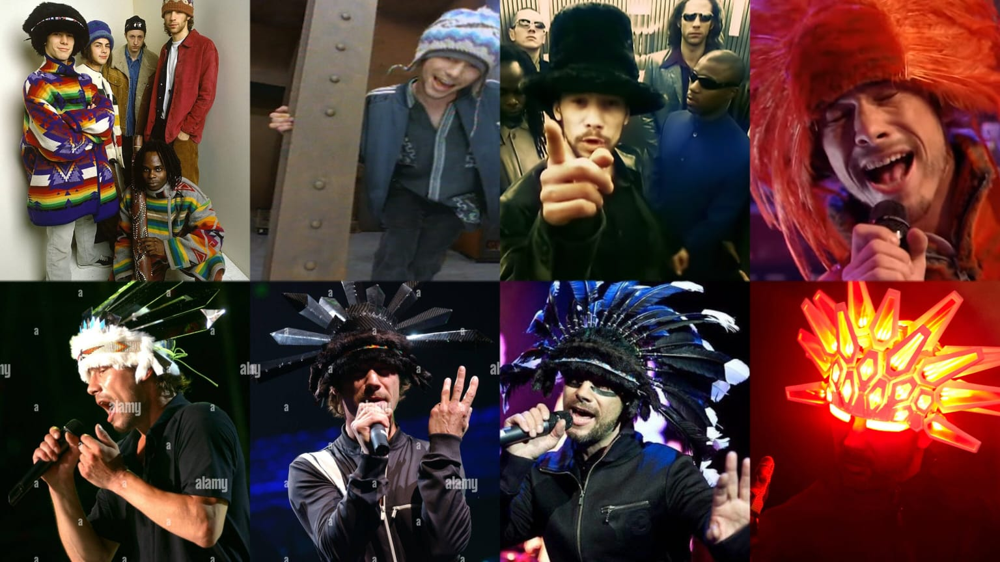
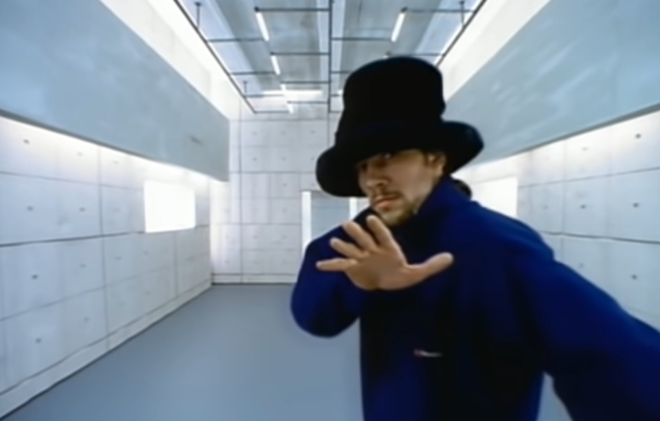
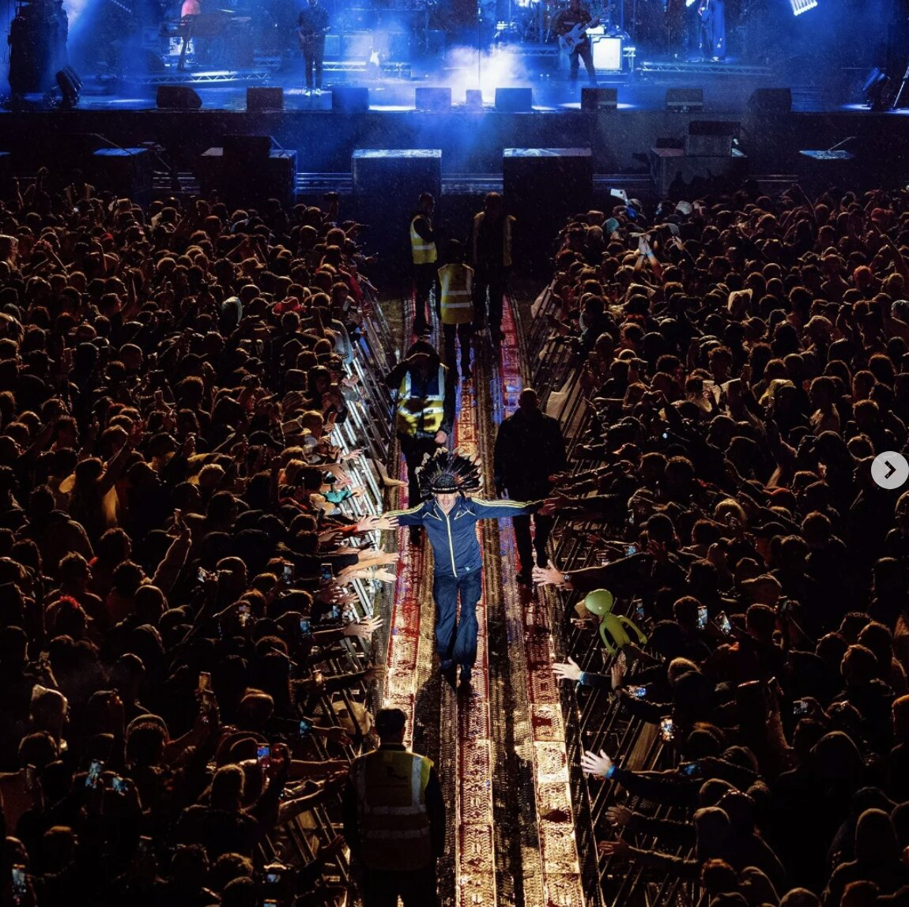
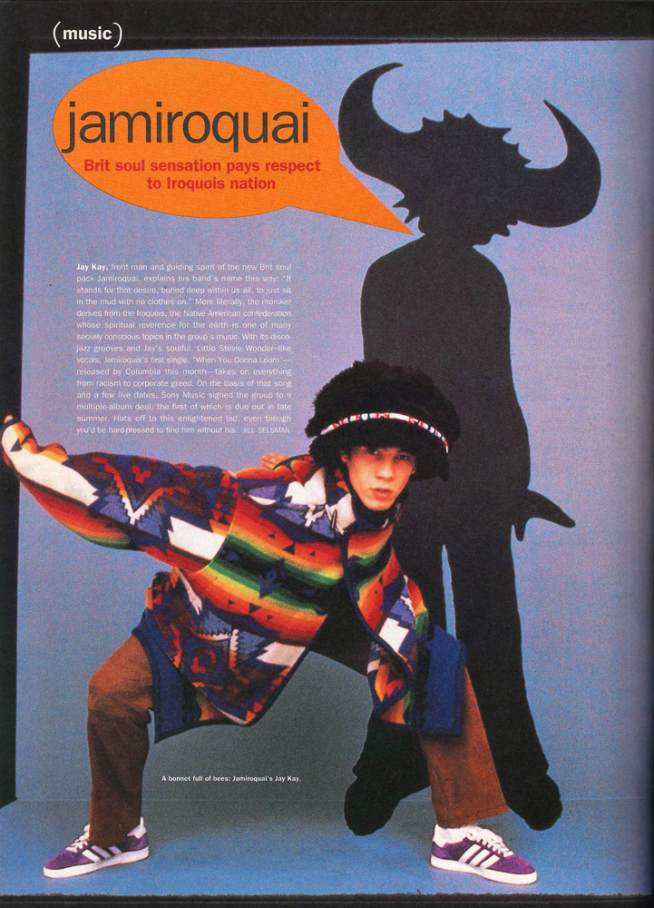

Jamiroquai
From the fictional encyclopedia
Jamiroquai is a British funk and acid jazz band formed in London in 1992. Led by vocalist Jay Kay, the band became one of the best-selling music acts of the 1990s with over 26 million records sold worldwide.

Jamiroquai performing live

Jay Kay and his iconic hat collection

The iconic Virtual Insanity music video, 1996
About
Jamiroquai was founded by Jay Kay in London in 1992. The name is a combination of the words "jam" and "Iroquai," a reference to the Iroquois Native American people.
The band rose to fame with their debut album Emergency on Planet Earth in 1993, which hit number one in the UK charts. They are known for blending funk, soul, acid jazz, and disco into a unique sound.
Discography
1990s Albums
- Emergency on Planet Earth (1993)
- The Return of the Space Cowboy (1994)
- Travelling Without Moving (1996)
- Synkronized (1999)
2000s–2020s Albums
- A Funk Odyssey (2001)
- Dynamite (2005)
- Rock Dust Light Star (2010)
- Automaton (2017)
Their third album Travelling Without Moving is widely considered their masterpiece, featuring hits like Virtual Insanity and Cosmic Girl.
Gallery

Festival crowd, early 2000s

Band promo shot, Travelling Without Moving era

Travelling Without Moving album cover (1996)
Legacy
Jamiroquai's influence on modern music is undeniable. Artists like Bruno Mars and Dua Lipa have cited them as a major inspiration for their retro-funk sound.
The Virtual Insanity music video won four MTV Video Music Awards in 1997, including Video of the Year, and is still considered one of the greatest music videos ever made.
Awards & Achievements
- Grammy Award — Best Pop Album (1997)
- MTV VMA — Video of the Year (1997)
- BRIT Award — Best British Group (1997)
- Guinness World Record — Fastest-selling debut UK act
References
This page was created for educational purposes as a class assignment.